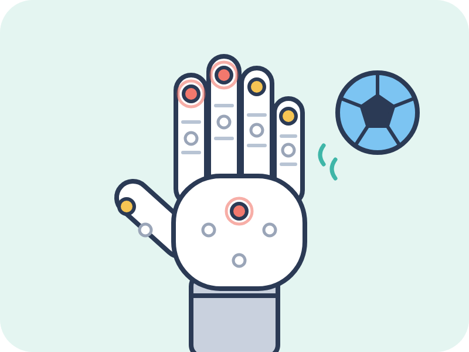

Where should the sensors go on a soft robotic hand?
Soft, dexterous hands deform around the objects they hold, so the contact-based rules used to place sensors on rigid robotic hands do not reliably carry over. SoftTouch is a three-step framework that chooses tactile and inertial sensor placement from real-world manipulation experiments, works with off-the-shelf sensors, and can be reconfigured for different hand designs.
For conventional rigid robotic hands, sensor placement is a well-studied problem, and a common answer is to put inertial and force sensors at the points where the hand contacts the object. A new generation of soft, dexterous robotic hands changes the physics that rule relies on.
Contact locations are predictable, the links are stiff, and a sensor mounted at a contact point measures that contact without changing it. Contact-based and analytical placement methods work well here.
The hand conforms to the object and vibrations spread through one deformable body. Rigid off-the-shelf sensors create a compliance mismatch that can redistribute forces and change the grip itself.
The interaction between the deformable hand, the sensor's material and the task is hard to model ahead of time. SoftTouch therefore treats real-world experiments as essential: candidate layouts are judged by the data they produce on the physical hand during real manipulation, not only by where contact happens.
SoftTouch builds on traditional contact-based approaches and grounds them in the Elliott and Connolly benchmark, a standardized set of 13 in-hand manipulation patterns for evaluating the dexterity of robot hands.
A person performs the benchmark's manipulation patterns on objects coated in paint. The stained regions of the hand show where contact happens for each pattern.
These regions are then mapped one-to-one onto equivalent locations on the robotic hand.
For each sensor type, candidate locations are placed at the contact points, midway between contact and the farthest point, and at the location farthest from contact.
The hand's space constraints prune these to a small set of layouts worth testing.
The robot performs each pattern with each layout. AprilTags on the object give ground-truth translation and rotation, and video gives success or failure labels.
A regressor (quantitative metrics) and a classifier (qualitative metrics) are trained per layout; their relative scores are combined, and the highest total score wins.
Schematic positions; circles are IMUs, squares are FSRs, and colors give the placement type.
Each layout is evaluated on a qualitative metric (did the manipulation succeed?) and quantitative metrics (how far did the object translate or rotate?). Failures include control errors (the manipulation was not performed), slips (the object left the hand) and runs with no object in the hand.
Sensor placement changed data quality substantially: layouts A1, A2 and B1 all outscored the farthest-from-contact baseline B2, which ranked lowest on every metric. But no single rule won everywhere.
IMUs at contact points catch slips and missing objects most reliably.
The classifier detected control errors perfectly in every layout. Contact-placed IMUs (A) also detected slips and no-object runs at or near 100% in most settings, while non-contact IMUs (B) were far less reliable. Failures were still detectable away from the contact points, likely because vibrations propagate through the hand's single deformable body.
For the quantitative metrics, contact was not always best: for Rock II, IMUs at the contact points had a lower relative regression score than other placements.
| Dynamic Tripod | Rock II | Index Roll | |||||
|---|---|---|---|---|---|---|---|
| Failure | IMU | FSR 1 | FSR 2 | FSR 1 | FSR 2 | FSR 1 | FSR 2 |
| Control error | IMU A (contact) | 100.0 | 100.0 | 100.0 | 100.0 | 100.0 | 100.0 |
| IMU B (non-contact) | 100.0 | 100.0 | 100.0 | 100.0 | 100.0 | 100.0 | |
| Slip | IMU A (contact) | 100.0 | 66.7 | 100.0 | 100.0 | 100.0 | 100.0 |
| IMU B (non-contact) | 66.7 | 11.1 | 100.0 | 55.6 | 33.3 | 11.1 | |
| No object | IMU A (contact) | 100.0 | 100.0 | 100.0 | 100.0 | 100.0 | 50.0 |
| IMU B (non-contact) | 80.0 | 40.0 | 100.0 | 90.0 | 90.0 | 50.0 | |
Where a sensor sits on a soft hand changes how well it can estimate both success and object motion.
The winning layout differed for each manipulation pattern, so placement should be chosen for the task set.
They were the most sensitive to slips and to missing objects, giving higher classification scores.
Qualitative failures were detectable far from contact, consistent with vibrations travelling through one deformable body.
Rigid FSRs at contact points made manipulation harder and caused more slips, and removing FSR data did not significantly change performance.
Because these effects are hard to predict, evaluating candidate layouts on the physical hand is a necessary step.
Sensor placement for grasping with conventional rigid robotic hands is well studied, and the usual rule is to put sensors where the hand contacts the object. Soft, dexterous robotic hands deform to the shape of the object, so that rule may not hold: interactions between the deformable hand, the sensor's material and the task are hard to predict, and real-world experiments are needed to judge where a sensor is useful. SoftTouch is a three-step sensor-placement framework for soft robotic hands that is easy to reconfigure for different hand designs and uses off-the-shelf sensors. It (1) maps human contact regions for a set of manipulation patterns from the Elliott and Connolly benchmark onto the robot hand, (2) derives candidate sensor configurations at contact, midway and farthest-from-contact locations, and (3) evaluates each configuration on the physical hand by how well its sensors estimate a qualitative metric (manipulation success or failure) and quantitative metrics (object translation and rotation). On the CMU Foam Hand III with IMUs and force sensitive resistors, sensor placement changed data quality substantially, the best placement differed between manipulation patterns, IMUs at contact points detected slips and missing objects most reliably, and the layout farthest from contact performed worst.
Keywords: sensor placement, soft robotic hand, dexterous in-hand manipulation, tactile sensing, force sensitive resistor, inertial measurement unit, sensorization, slip detection, Elliott and Connolly benchmark.
@inproceedings{li2022softtouch,
title = {SoftTouch: A Sensor-Placement Framework for Soft Robotic Hands},
author = {Li, Chao and Pollard, Nancy S.},
booktitle = {2022 IEEE-RAS 21st International Conference on Humanoid Robots (Humanoids)},
pages = {504--511},
year = {2022},
doi = {10.1109/Humanoids53995.2022.10000138}
}